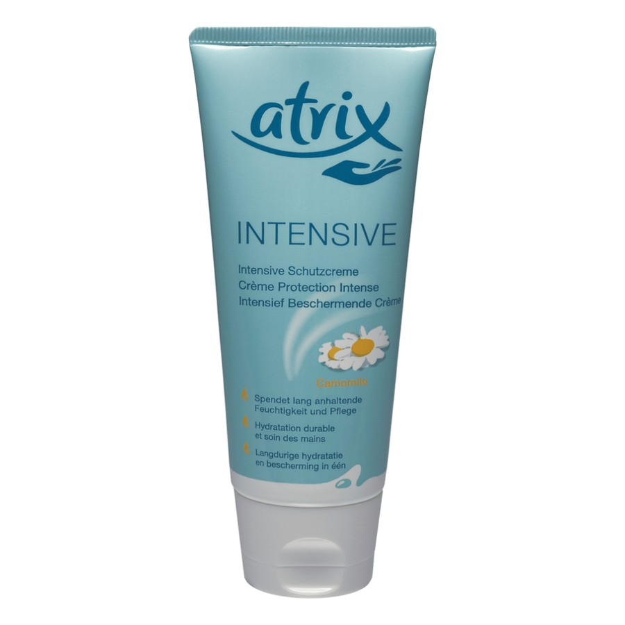

冬天護手霜怎麼挑？先看純素、無添加人工香料等標示：4 款比較
本文怎麼整理。以下依 2026 年 11 月 27 日妮維雅台灣官網（含同站列出的艾翠斯商品頁）、雪芙蘭品牌官網，以及康是美網購 eShop、雪芙蘭官方購物網整理規格與標價。沒有實機測試，也不比較銷量。各款價格來源寫在對照表與價格框，會浮動，不能當成蝦皮售價。
快速結論：先排除不適合的
先對照官網的 VEGAN 純素、無添加人工香料與極度乾燥標示。編號依文章順序排列，細節請看各款說明。
- NT$125–149當日通路售價（查詢日 2026-11-27）
- 75 ml／100 ml／100 g毫升與克不能直接當成相同體積
- 極度乾燥 2 款純素、無添加人工香料各 1 款
-
要 VEGAN 純素，看甜杏仁油、乳木果油標示
妮維雅密集保濕修護｜75 ml 不適合 主要想找「無添加人工香料」或官網寫極度乾燥的人（本款沒有這兩項標示） 別買錯 核對品名「密集保濕修護護手霜」與產品號碼 84697，不要買成極致修護或潤手護指霜
- 要官網點名維生素原 B5（也標極度乾燥）
- 要無添加人工香料，看小甘菊標示（也標極度乾燥）
- 要金盞花萃取精華與蜂蠟；官網有寫冬天碰水、寒冷低溫
編號為文章編排順序，不是實機評測排名。前 3 款是康是美 eShop 2026-11-27 標價，雪芙蘭是官方購物網同日標價。
下單前請核對品名、容量與劑型，不要買成身體乳液、潤手護指霜、滋養霜或其他組合。
目錄（8 項）
4 款候選怎麼對照
本站含蝦皮分潤連結，透過連結購買我可能獲得分潤，不影響你的價格
| 商品 | 通路價 | 關鍵規格 | 差異標示 |
|---|---|---|---|
|
妮維雅
密集保濕修護
|
NT$129 康是美價（2026-11-27 查詢） | 75 ml | VEGAN／純素；甜杏仁油、乳木果油 |
|
妮維雅
極致修護
|
NT$129 康是美價（2026-11-27 查詢） | 75 ml1 | 維生素原 B5；極度乾燥 |
|
 |
NT$149 康是美價（2026-11-27 查詢） | 100 ml | 小甘菊；無添加人工香料；極度乾燥 |
|
雪芙蘭
深度修護型
|
NT$125 雪芙蘭官網價（2026-11-27 查詢） | 100 g | 金盞花、蜂蠟、乳木果油 |
通路售價・查詢日 2026-11-27・編號非排名・點品名看詳細
-
 妮維雅 密集保濕修護
NT$129 康是美價（2026-11-27 查詢）
75 ml
VEGAN／純素；甜杏仁油、乳木果油
妮維雅 密集保濕修護
NT$129 康是美價（2026-11-27 查詢）
75 ml
VEGAN／純素；甜杏仁油、乳木果油
-
 妮維雅 極致修護
NT$129 康是美價（2026-11-27 查詢）
75 ml1
維生素原 B5；極度乾燥
妮維雅 極致修護
NT$129 康是美價（2026-11-27 查詢）
75 ml1
維生素原 B5；極度乾燥
- 艾翠斯 修護護手霜 NT$149 康是美價（2026-11-27 查詢） 100 ml · 軟管 小甘菊；無添加人工香料；極度乾燥
-
 雪芙蘭 深度修護型
NT$125 雪芙蘭官網價（2026-11-27 查詢）
100 g
金盞花、蜂蠟、乳木果油
雪芙蘭 深度修護型
NT$125 雪芙蘭官網價（2026-11-27 查詢）
100 g
金盞花、蜂蠟、乳木果油
蝦皮售價依賣場即時變動，以點進去的頁面為準。
前 3 款價格為康是美 eShop 2026-11-27 售價（頁面另列建議售價 NT$189，未寫進表內）。雪芙蘭為官方購物網同日售價 NT$125（同頁另列 NT$149）。售價會變，不能當成蝦皮售價。
1 極致修護的 75 ml 為官網商品圖與康是美網購商品名稱標示，商品頁內文本次未列容量數字。
逐款比較
編號依文章順序，不是評測排名。
妮維雅
密集保濕修護護手霜
妮維雅密集保濕修護護手霜（75 ml，官網點名甜杏仁油、乳木果油，並標 VEGAN 純素）
- 容量
- 75 ml（官網文字與商品圖管身）
- 產品號碼
- 84697
- 官網點名成分
- 甜杏仁油、乳木果油
- 其他官網標示
- VEGAN 純素保養（不添加動物性成分）
- 價格資訊
- 康是美 eShop 2026-11-27 售價 NT$129（另列建議售價 NT$189）；官網未列建議售價
- 規格來源
- 規格依妮維雅台灣官網；售價依康是美網購 eShop
官網有「24H長效潤澤不黏膩」等說明（妮維雅台灣官網，非本篇實測）。想對到 VEGAN 純素或不添加動物性成分，以及甜杏仁油、乳木果油標示的人，可以先看這一款。
規格來源：品牌官網
妮維雅
極致修護護手霜
妮維雅極致修護護手霜（官網商品圖與通路名稱標示 75 ml，商品頁內文未列）
- 容量
- 官網商品圖與通路名稱標示 75 ml，商品頁內文未列
- 產品號碼
- 84687
- 官網點名成分
- 維生素原 B5；成分表有乳木果油
- 其他官網標示
- 適用乾燥肌膚、極度乾燥
- 價格資訊
- 康是美 eShop 2026-11-27 售價 NT$129（另列建議售價 NT$189）；官網未列建議售價
- 規格來源
- 規格依妮維雅台灣官網；售價依康是美網購 eShop
官網點名維生素原 B5，並寫適用乾燥／極度乾燥（妮維雅台灣官網，非本篇實測）。兩款妮維雅查詢日售價相同，下單前請核對品名「極致修護護手霜」與產品號碼 84687。
規格來源：品牌官網
艾翠斯
修護護手霜
艾翠斯修護護手霜（100 ml 軟管，官網點名天然小甘菊修護配方）
- 容量與劑型
- 100 ml；軟管
- 官網點名成分
- 天然小甘菊修護配方
- 其他官網標示
- 適用乾燥肌膚、極度乾燥；無添加人工香料；官網寫經肌膚相容性測試（該頁未列測試條件，不作評測結論）
- 價格資訊
- 康是美 eShop 2026-11-27 售價 NT$149（另列建議售價 NT$189）；官網未列建議售價
- 規格來源
- 規格依妮維雅台灣官網該商品頁；售價依康是美網購 eShop
官網點名天然小甘菊修護配方，並標無添加人工香料、適用乾燥肌膚與極度乾燥。想找有這些標示的 100 ml 軟管，可以先看這一款。下單前請核對品名是修護護手霜，避免買成潤手護指霜。
規格來源：品牌官網
雪芙蘭
護手霜（深度修護型）
雪芙蘭護手霜（深度修護型）100 g（官網點名金盞花萃取精華、蜂蠟、乳木果油）
- 容量
- 100 g（品牌官網）
- 官網點名成分
- 金盞花萃取精華、蜂蠟、乳木果油、防護因子
- 其他官網標示
- 品牌官網說明對應冬天碰水、低溫情境
- 價格資訊
- 雪芙蘭官方購物網 2026-11-27 售價 NT$125（同頁另列 NT$149）
- 規格來源
- 規格依雪芙蘭品牌官網；售價依雪芙蘭官方購物網
官網點名金盞花萃取精華、蜂蠟、乳木果油及防護因子，並寫到冬天碰水、寒冷低溫（雪芙蘭品牌官網，非本篇實測）。想對到這些標示、容量是 100 g 的人，可以先看這一款。下單前請確認品名是深度修護型 100 g，不要買成滋養霜或其他容量。
規格來源：品牌官網；售價依官方購物網
適合誰
- 想挑 75 ml、看重 VEGAN 純素（不添加動物性成分）與甜杏仁油、乳木果油標示：看妮維雅密集保濕修護護手霜。
- 想挑 75 ml、看重官網標示適用乾燥／極度乾燥肌膚與添加維生素原 B5：看妮維雅極致修護護手霜。
- 想挑 100 ml 軟管，想看無添加人工香料與天然小甘菊修護配方標示，可看艾翠斯修護護手霜。官網也標適用極度乾燥。
- 想挑 100 g、看重金盞花萃取精華與蜂蠟配方標示：看雪芙蘭護手霜（深度修護型）。官方購物網當日標價 NT$125。
本文沒有實測哪一款比較滋潤，也不比較銷量。下單前請核對品名、容量與劑型，不要買成身體乳液、潤手護指霜、滋養霜或其他組合。
資料與更新紀錄
- 最後核對日
- 核對範圍
- 規格：4 款官網於 2026-11-27 重查成分與肌膚類型標示。價格：本次未重查。庫存：未查。
- 這次改了什麼
- 標題、摘要和選購順序改以官網標示為主，補齊極致修護與艾翠斯的極度乾燥標示，並更新快速結論的選購及版本提醒。稍早同日調整價格標示和按鈕文字，在比較表補上密集保濕修護的 VEGAN 純素標示，將價格來源放入對照表和卡片，並統一更新紀錄格式、補上電暖器延伸閱讀。